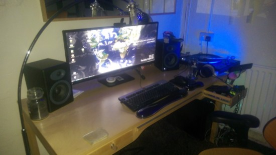

What you are seeing on the picture above is a 34" LG 2560x1080 display that set me back about 500 British quid. Not a cheap investment but I figured I'd bite the bullet as my monitors were getting old and squealing when in low power mode (probably only caused by caps going but I wanted to tidy up my desk anyway) and was curious how my workflow would change with one monitor.
So 2560x1080, that's a lot of pixels, but not as many as I had before when I had 2x 24" monitors, one horizontal, one vertical. First things first, I miss my vertical display, only for writing code.
My desk is a lot tidier with this, however I can't rotate the monitor to be portrait which is a huge negative.
Here is a print screen of my blog at 2560px:
For me, that's a poor UX because the meta data is just so far away, a quick fix for this would be to have a max-width property in the CSS of Wordpress but obvious this isn't enabled by default.
I loved using etherdraw/gimp/inkscape/blender with this monitor, so much pixel space is so valuable when using those apps.
For work, I use it exactly as if I had two monitors side by side, however no bezel is nice for mouse flow. When writing I find I very rarely run full screen, mostly because the view between the beginning/end of the object is just too far. When doing 3d modeling (Blender) having the extra px is awesome.
For gaming and consuming video, this setup is superior, sadly I do less and less of that nowadays. Project Zomboid was great however Runner2 isn't setup to use the additional pixels so it really depends on the type of game you play and if you need additional reference material when playing the game(such as you would if playing Project Zomboid). If you are pondering getting one of these monitors I'd check to see if the game you are going to play on it supports 2560x1080 resolution.
TLDR; Good for most gaming, good for 3d model work, image editing, good for movie watching. No better for word processing, blog publishing, code writing. If anything my code writing will be more difficult without a vertical monitor.
{kind=link}
{kind=link}